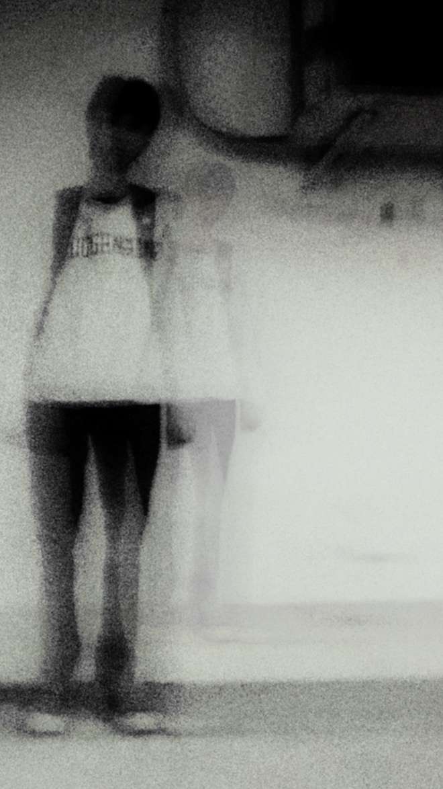

About
so.suic emerged from a spark of emotion, perfectly romanticized by its host. This music does not exist to provide answers, but to create a safe space for every feeling left unacknowledged. Because in the end, what resonates here might just be what you've been holding onto in silence. Unknowingly, perhaps you, too, are nurturing so.suic within yourself.
Expressing what's inside doesn't always require loud words or clear explanations. Sometimes, it's about letting those heavy emotions breathe through whatever medium feels right to you—whether it's through noise, words, silence, or simply allowing yourself to feel them fully. so.suic is just one way of letting it out, hoping to encourage you to find your own outlet, in your own time, and on your own terms.
The music of so.suic is not defined by any specific genre; its true essence lies in honesty.
